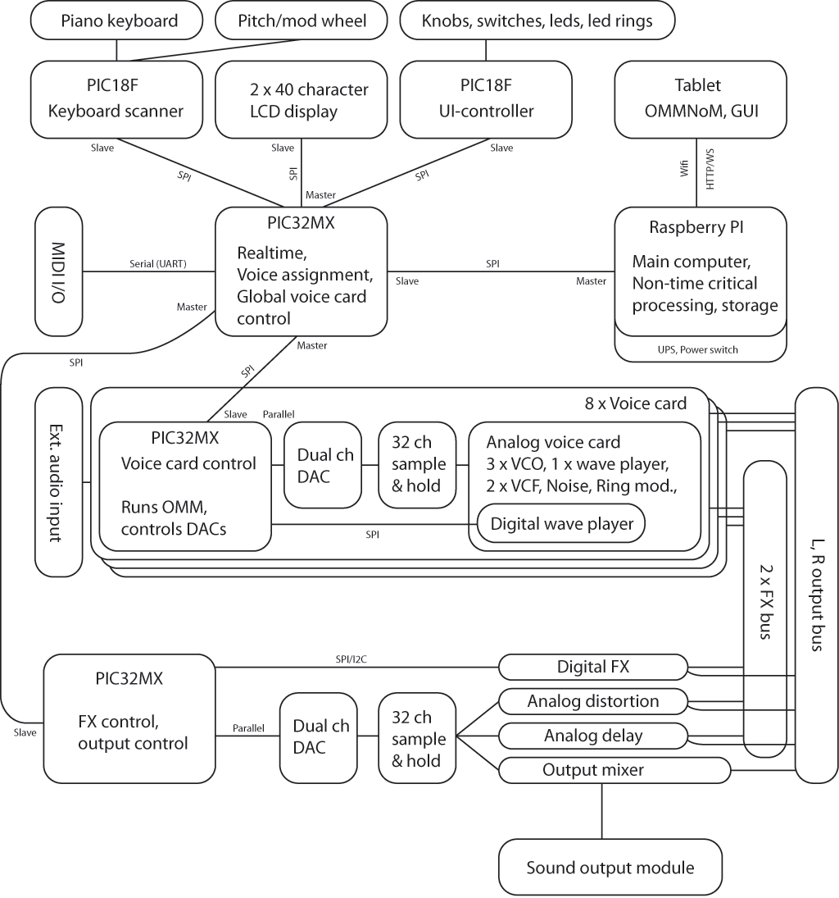

The XM8 is an 8 voice fully multi-timbral digital/analog hybrid synthesizer. It utilizes an Oberheim Matrix style digital modulation matrix that lets the user add a large number of ramps, envelopes, LFOs and countless other functions to control 3 analog VCOs, two analog filters and various other analog circuitry.

The synth will feature a huge number of knobs, buttons, switches and leds. None of these will directly control the voice cards, instead, they are inputs to the OMM, see below, and are completely configurable.
Instead of using encoders for the knobs, normal potentiometers will be used. The current position will be indicated by 15 or 31 leds in a circle around the potentiometer.
To make the XM8 easy to use and configure, all functionality is controlled through the browser on a wifi-connected tablet or computer. The XM8 will act as a wifi access point if it cannot connect to a previously configured network. It is possible to control any parameter - potentiometers, switches, buttons etc from the browser, allthough it will probably be more convenient to use the hardware versions for most functions.
Each voice card in the XM8 is controlled by a modulation matrix, or rather, a net of functions that transforms user input to control voltages that affect the shaping of a sound. There are no predefined signal sources (LFOs, ramps etc)as in the Oberheim, instead, any number of sources may be added to the network (within reason of course) and any input can be used to control any kind of function - including but not limited to LFOs, VCO pitch, filter cutoff, pan, envelopes etc.
The matrix has 32 analog outputs, controlled by two 16 bit bipolar digital to analog converters that run at approximately 2.5kHz per channel, and each voice card has its own separate matrix running on a PIC32MX.
The node manager is a graphical tool that lets the user build a modulation matrix by dragging and dropping nodes. It runs in the connected browser.
Haslum, 25th of March, 2016
Joakim Tysseng
Xonik Devices